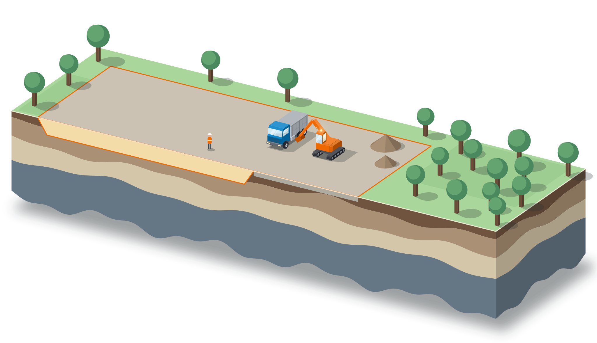
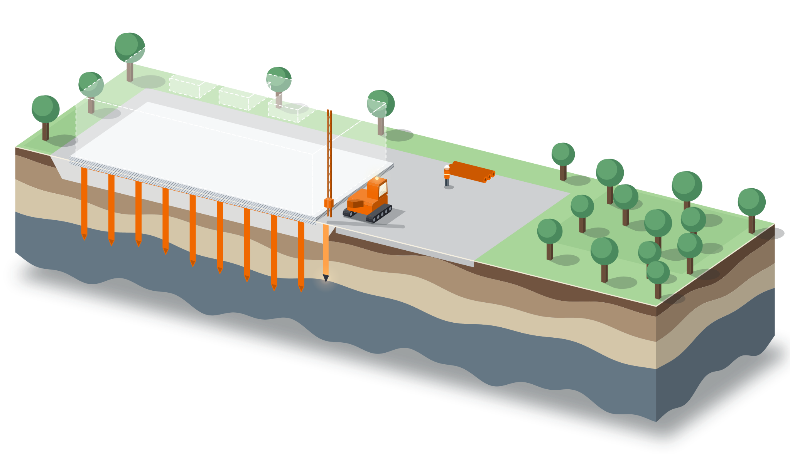
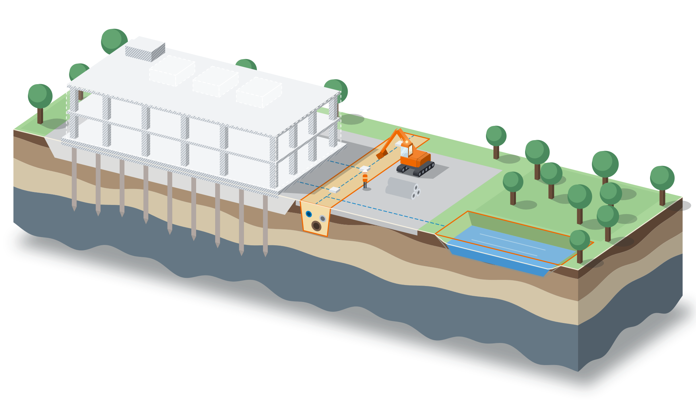
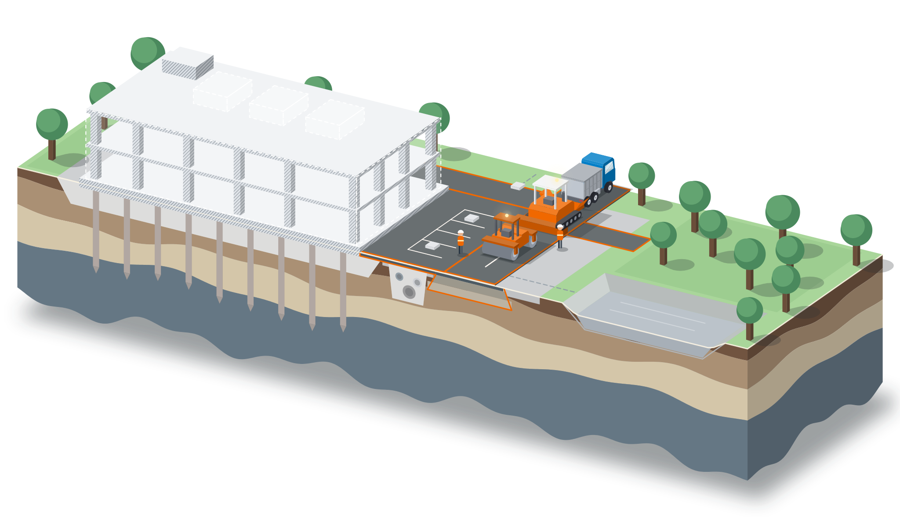
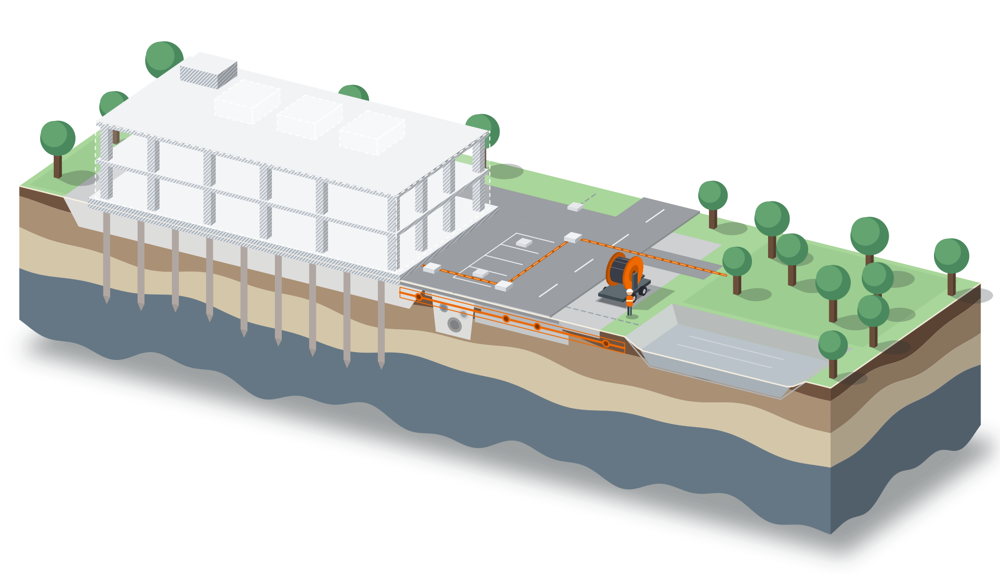
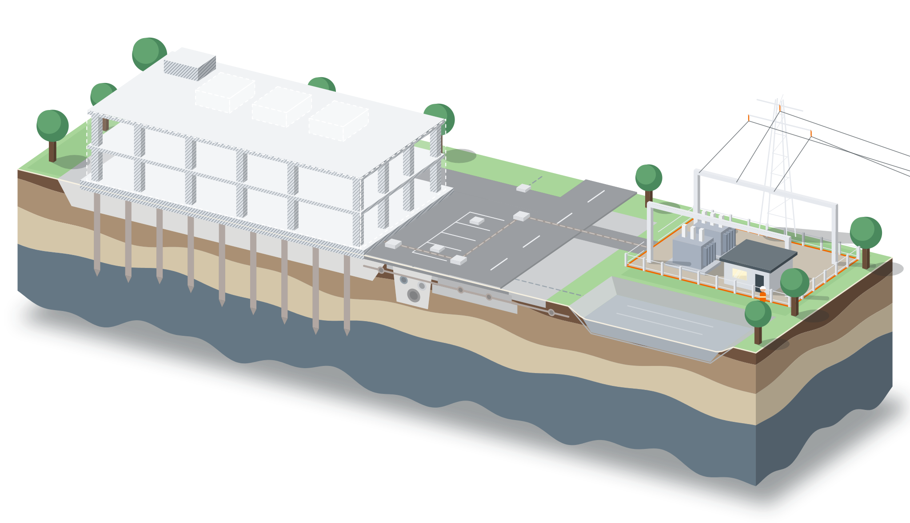
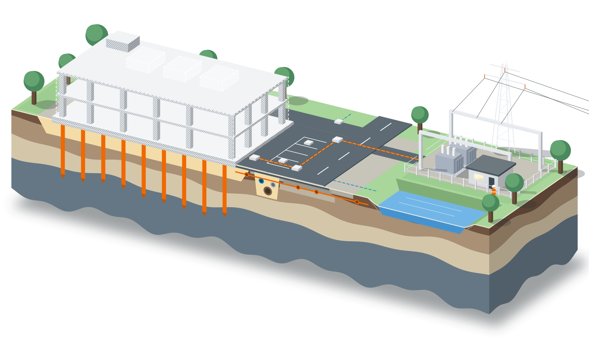

Datakeskusten rakentaminen
Datakeskuksen infra tontin esirakentamisesta verkkoliityntään yhdellä sopimuksella.
- Yksi sopimus maanrakennuksesta verkkoliityntään
- Nimetty yhteyshenkilö koko hankkeelle
- Toimimme Suomessa, Ruotsissa ja Virossa
Koko datakeskuksen infra yhdeltä toimijalta
Datakeskushankkeessa aikataulu on tiukka ja työvaiheet riippuvat toisistaan. Kun yksi toimija vastaa koko ketjusta, rajapinnat eivät viivästytä hanketta.
- 01 / 06
Esirakentaminen ja maanrakennus
Valmistelemme tontin rakennuskelpoiseksi: raivaus, kaivuu, louhinta, täytöt ja massanvaihdot. Käsittelemme myös pilaantuneet maat ja ohjaamme ylijäämämassat omiin vastaanottopaikkoihimme. Kun pohja on tehty oikein, seuraavat vaiheet pääsevät alkamaan aikataulussa.
Infra- ja maarakentaminen
- 02 / 06
Perustukset ja paalutus
Datakeskuksen raskaat rakenteet ja laitteet vaativat kantavan pohjan. Teemme pohjanvahvistukset, porapaalutuksen ja perustukset rakennukselle, muuntamoille ja varavoimalle, myös heikosti kantaville maille.
Pohjarakentaminen ja paalutus
- 03 / 06
Kunnallistekniikka
Rakennamme tontin vesihuollon, viemäröinnin ja hulevesijärjestelmät sekä putkiyhteydet liittymiin. Jäähdytyksen vaatimat vesi- ja putkiyhteydet suunnitellaan samassa yhteydessä, jotta ne eivät myöhemmin risteä kaapelireittien kanssa.
Kunnallistekniikka
- 04 / 06
Tiet ja kentät
Työmaatiet palvelevat raskasta kalustoa koko rakentamisen ajan, ja valmiina ne muuttuvat huoltoliikenteen reiteiksi. Toteutamme piha-alueet, pysäköinnin, kentät ja päällystyksen omalla kalustolla.
Päällystys ja asfaltointi
- 05 / 06
Kaapeloinnit
Asennamme keski- ja suurjännitekaapeloinnit, kaapelikanavat ja suojaputkitukset sähköasemalta datakeskukselle. Kaapelireitit tehdään samassa urakassa maanrakennuksen kanssa, jolloin kaivantoja ei tarvitse avata uudelleen.
Sähköverkot ja sähköasemat
- 06 / 06
Sähköasema ja verkkoliityntä
Rakennamme sähköaseman ja liitynnän kantaverkkoon Fingridin vaatimusten mukaisesti. Tunnemme liittymisen vaiheet, joten verkkoliityntä etenee rinnakkain muiden töiden kanssa eikä jää hankkeen pullonkaulaksi.
Sähköasemat ja voimajohdot
Ulkomaiselle hankeomistajalle
Moni datakeskushanke tulee Suomeen ulkomailta. Autamme siinä, miten Suomessa rakennetaan.
Mukana jo kehitysvaiheessa
Arvioimme toteutettavuuden ja annamme budjettihinnan ennen tarjouspyyntöä.
Luvat ja verkkoliityntä
Tunnemme paikalliset lupaprosessit ja Fingridin liittymisen vaiheet.
Resurssit nopeasti
Oma kalusto ja tekijät käynnistävät työt, kun rahoitus on varmistunut.
Yksi yhteyshenkilö
Sama ihminen vastaa koko toimituksesta.
Yksi konserni, koko toimitus
KSBR on osa GRK-konsernia. Yhdessä toteutamme hankkeen maanrakennuksesta betonirakenteisiin ja sähköön.

123456K1K2GRK
Tontti ja infra maan alla ja ympärillä: maanrakennuksesta sähköasemaan.
- 1Esirakentaminen ja maanrakennus
- 2Perustukset ja paalutus
- 3Kunnallistekniikka
- 4Tiet ja kentät
- 5Kaapeloinnit
- 6Sähköasema ja verkkoliityntä
KSBR
Datakeskusrakennus maan päällä: perustuksista betonirunkoon.
- K1Perustukset ja paalulaatat
- K2Betonirunko ja paikallavalu
Toteutettuja hankkeita
KäynnissäDatakeskushanke Suomessa
GRK on mukana toteuttamassa datakeskushanketta. Hankkeen arvo GRK:lle on noin 66 miljoonaa euroa.
Lue uutinenDatakeskuksen osia, joita olemme rakentaneet
KäynnissäKantaverkon 400 kV:n kaapeliyhteys
Verkkoliityntä ja kaapelointi: Suomen ensimmäinen näin laaja 400 kV:n maakaapeliyhteys.
Lue referenssiFortumin tuotantolaitos
Pääurakoitsijana sähköpohjaisessa laitoksessa: 50 MW:n sähkökattila ja 800 MWh:n lämpöakku.
Lue referenssiSähköasema Kalkkimaan energiapuistoon
GRK on valittu toteuttamaan energiapuiston sähköasemahanke.
Lue uutinenMiksi GRK
Iso konserni, joka vastaa koko hankkeesta ja jossa oikea ihminen on yhden puhelun päässä.
1 170
M€ tilauskanta 30.6.2026
Sovittu tehdään
Pidämme aikataulun ja vastaamme lopputuloksesta. Asiakkaan ei tarvitse huolehtia.
6
palvelua samassa hankkeessa
Kokonaisuus yhdeltä
Maanrakennus, perustukset, rata ja sähkö samassa hankkeessa ilman rajapintoja.
1 320
henkilöä, keskimäärin 4–6/2026
Iso mutta notkea
Konsernin kantokyky ja nopeat päätökset. Oikea ihminen vastaa.
Samaan hankkeeseen
 Energia
Energia Pohjarakentaminen ja paalutus
Pohjarakentaminen ja paalutus Sähköverkot ja sähköasemat
Sähköverkot ja sähköasematUsein kysytyt
Voiko GRK toteuttaa datakeskuksen maanrakennuksen Suomessa?
Hoidatteko sekä maanrakennuksen että verkkoliitynnän?
Voiko GRK antaa budjettihinnan ennen tarjouspyyntöä?
Missä maissa toimitte?
Yhteyshenkilöt
Datakeskushankkeissa sinua palvelevat vastuuhenkilöt hankkeen osittain.
Jaakko Mäkelä
Esirakentaminen ja maanrakennus · Liiketoimintajohtaja, taito- ja väylärakentaminen sekä päällystys
Joni Parkkinen
Sähköasema ja verkkoliityntä · Aluepäällikkö, Power
Kerro hankkeestasi
Kerro hankkeen tyyppi ja vaihe, niin oikea asiantuntija ottaa yhteyttä.
Töihin datakeskus- ja energiahankkeisiin?
Katso avoimet työpaikat ja ammattipolut.